Accessing OneDrive
-
1Navigate to https://www.office.com/
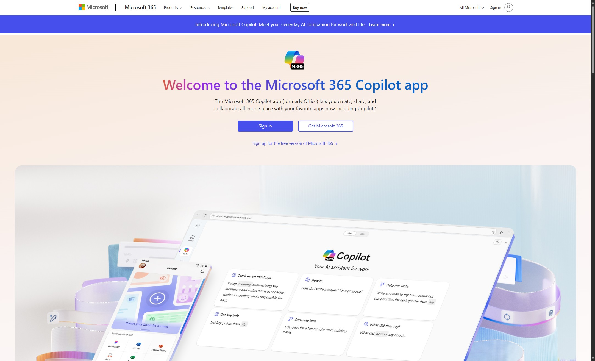
-
2Click "Sign In" Login to Ampler account.
-
3Click "OneDrive"
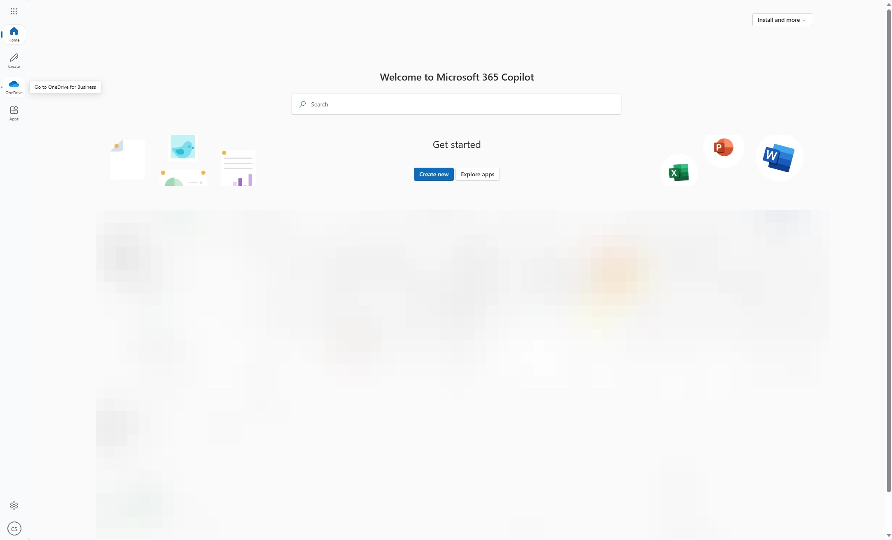
Your Files/Upload Files
-
4Click "My files" to see your files
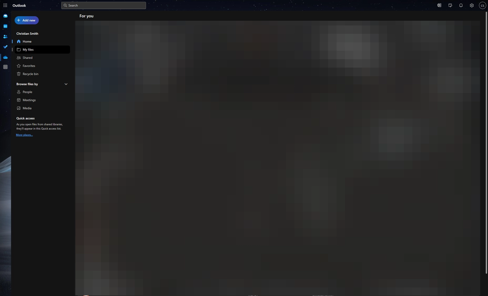
-
5Click "Add new" to upload new file.
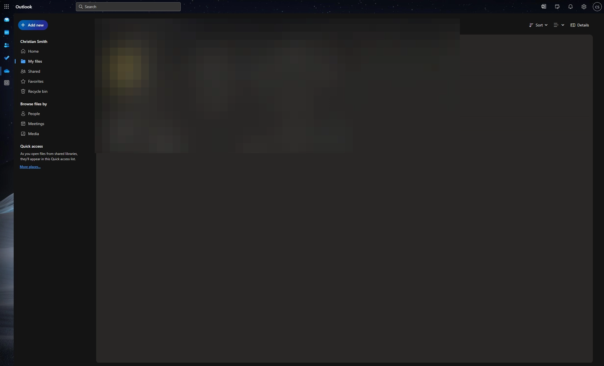
Share Files
-
6Select file you would liek to share.
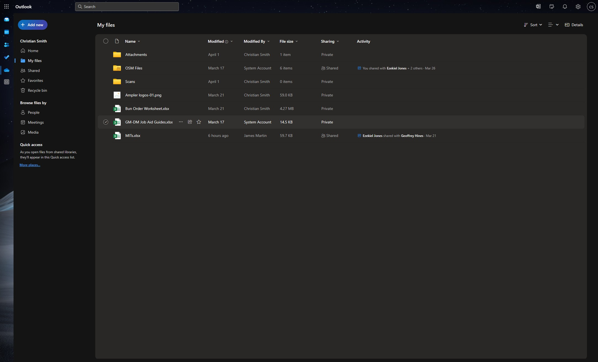
-
7Click "Share"
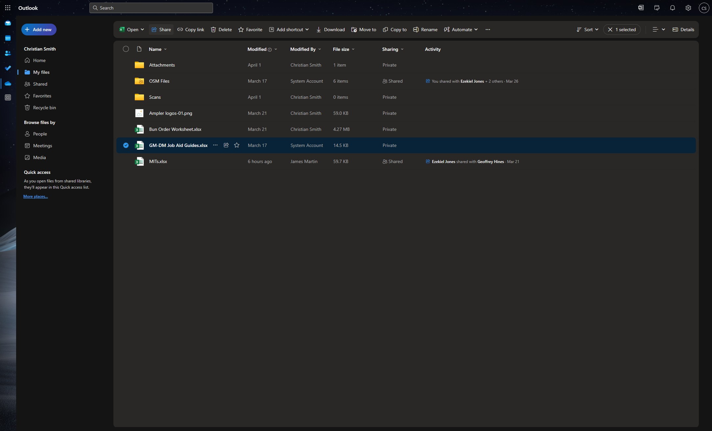
-
8Type in name or group you would like to send to.
-
9Click Pencil icon to change the level of access they will have.
-
10Add a message regarding the shared file.
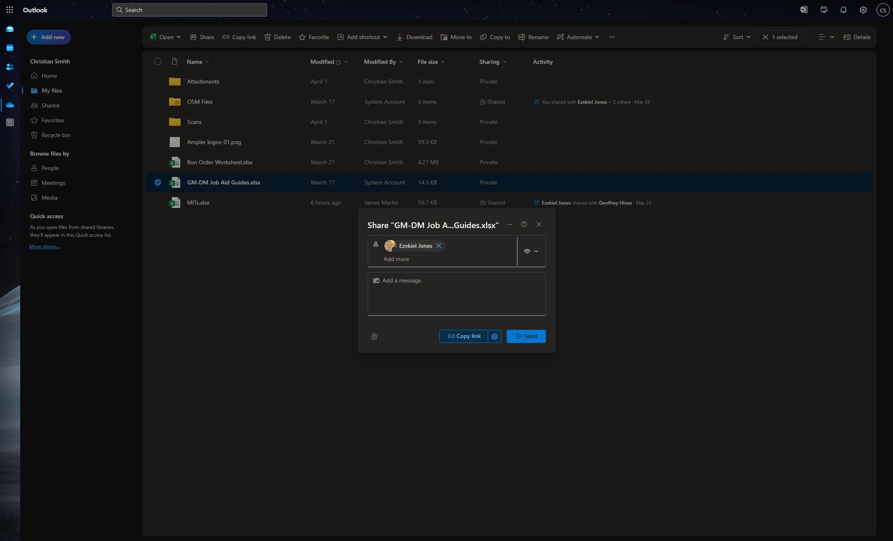
-
11Click Settings icon for more options.
-
12Set who the link will work for. Expiration date of link (blank is no expiration) Password of link (blank is no password)
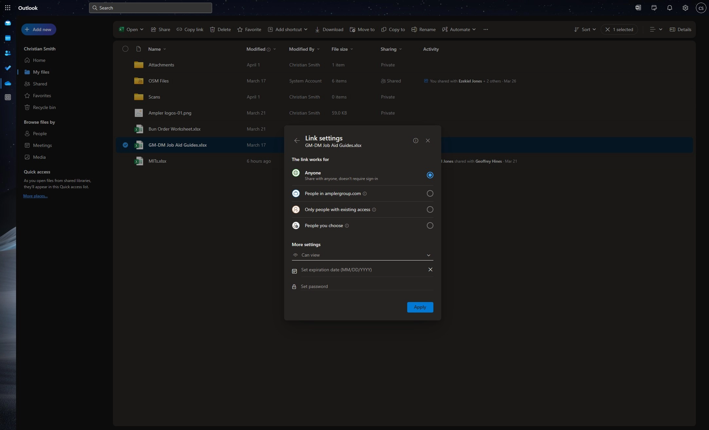
-
13Click "Apply"
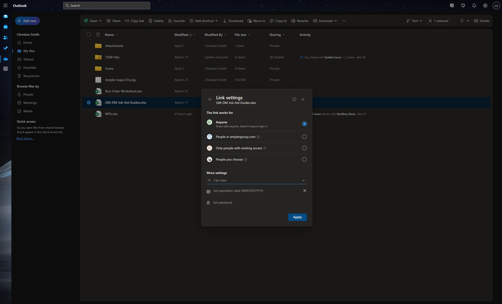
-
14Click "Send"
-
Warning
They will receive an email with all information you provided above.
-
15To view files shared with you, click "Shared."
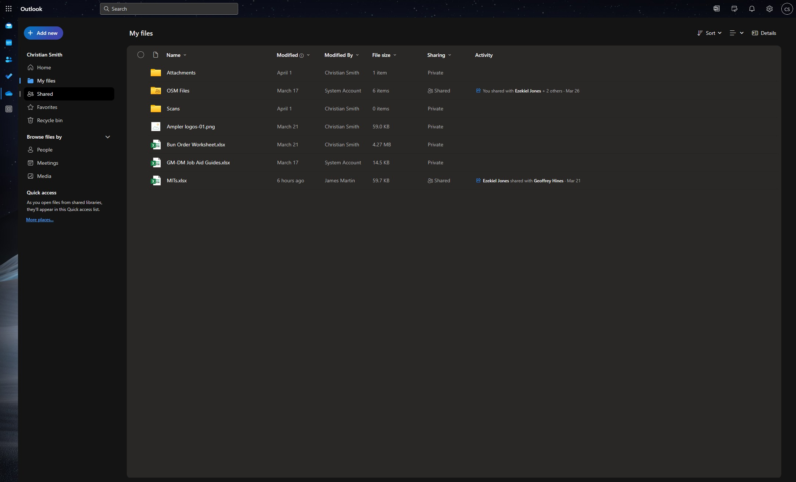
File Activity
-
16Click "MITs.xlsx"
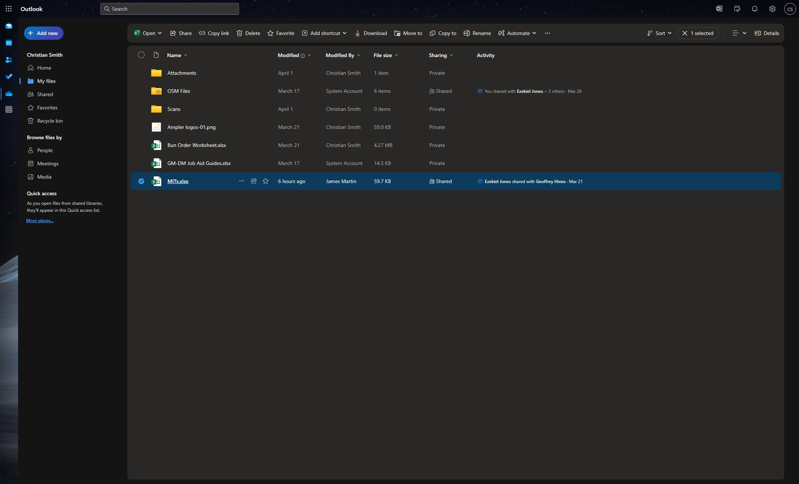
-
17If you have a shared file and someone is currently working on it, you can see that by their initials showing up at the top next "Comments" You can also see their activity cursor, which will match the color of their initials at the top.
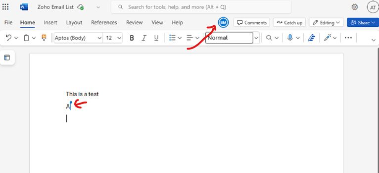
Version History
-
18Click "File"
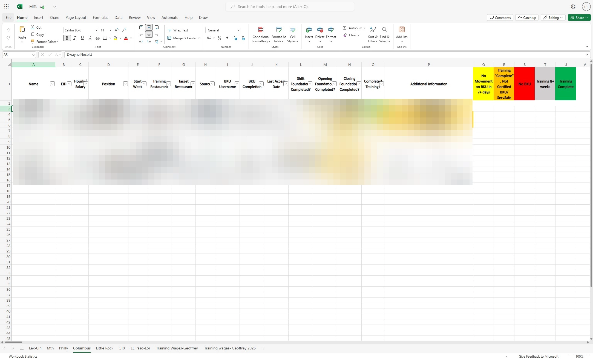
-
19Click "Version History"
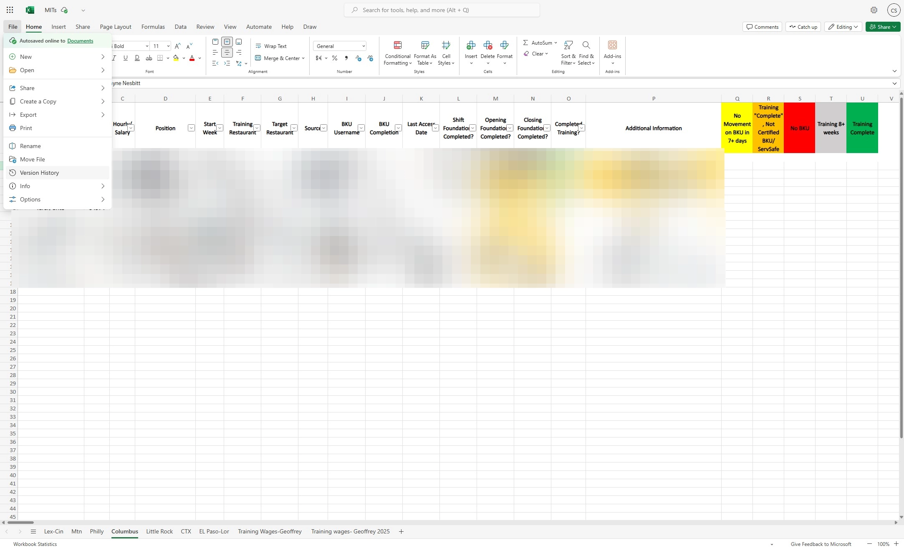
-
20This shows all the history of the file.
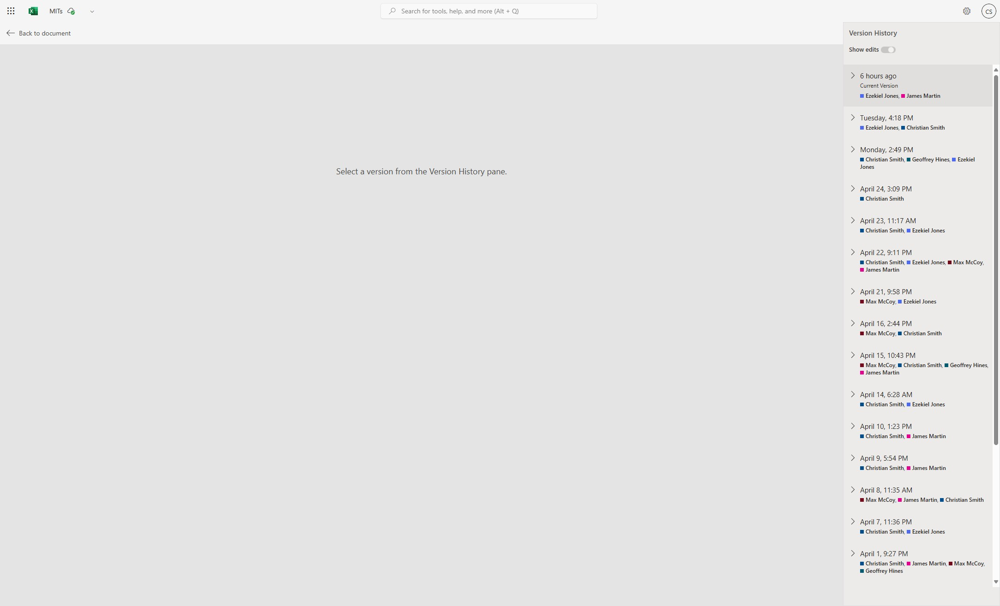
-
21Click which version you would like.
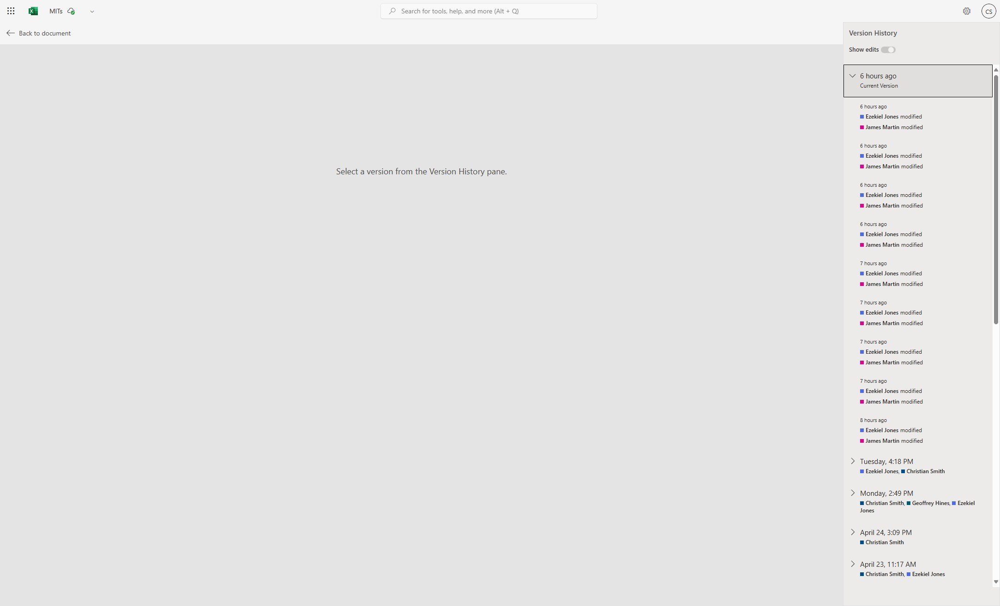
-
22You may now restore file or save a copy of the file.
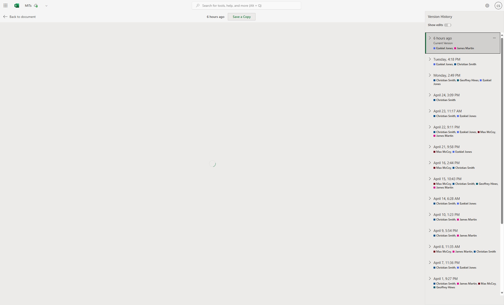